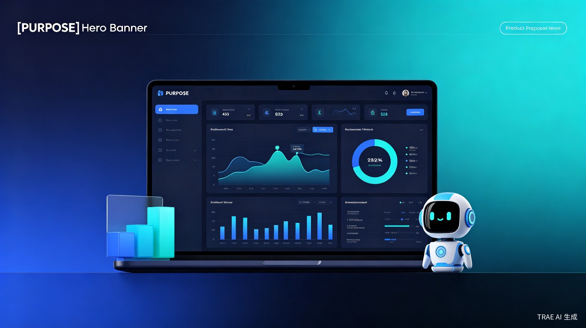

开源中文金融数据工作平台 —— 让每个人都能拥有机构级的投研能力
TRAE AI 创造力大赛 · 学习工作赛道OpenInsight 是一个面向中文用户群体的开源金融数据工作平台，旨在打破现有金融数据工具的高门槛和语言壁垒。当前市场上以 OpenBB Workspace 为代表的金融数据分析平台虽然功能强大，但存在闭源收费和缺乏中文支持两大痛点，导致大量国内个人投资者、学生研究者和小型机构难以获得机构级的投研工具。
本项目受 OpenBB 启发，但选择完全开源的路线，并深度适配中文金融市场的数据生态（A股、港股、公募基金、可转债等），让中文用户也能零门槛地构建专业级金融数据分析工作流。
OpenBB Workspace 是闭源的商业产品，年费高昂，且界面、文档、AI助手均为英文，对中文用户极不友好。国内虽有同花顺、东方财富等工具，但缺乏开源、可定制、AI驱动的现代化工作平台。OpenInsight 正是填补这一空白。
希望进行量化分析和数据驱动决策，但受限于昂贵的数据终端费用和英文界面。
金融、经济、数据科学专业的学生和教师，需要免费且可扩展的教学研究工具。
初创私募基金、家族办公室等，预算有限但需要专业级数据分析能力。
希望基于开源金融数据平台进行二次开发和插件扩展的技术爱好者。
OpenInsight 是一个 Web端 + 桌面端 的开源金融数据工作平台，采用现代化的技术栈构建：
| 维度 | OpenBB Workspace | 同花顺/东方财富 | OpenInsight（本项目） |
|---|---|---|---|
| 开源协议 | 闭源商业软件 | 闭源商业软件 | 完全开源（MIT/Apache） |
| 中文支持 | 无 | 完整中文 | 原生中文 + 中文AI |
| 数据覆盖 | 美股为主 | A股/港股为主 | A股/港股 + 美股（可扩展） |
| AI能力 | 英文AI Copilot | 有限AI功能 | 中文AI投研助手 |
| 定制化 | 受限 | 受限 | 完全可定制 + 插件生态 |
| 部署方式 | SaaS/企业部署 | SaaS | 本地/云端/私有化 |
| 费用 | 年费制（较高） | 部分免费/增值收费 | 完全免费 |
金融数据民主化：当前专业金融数据终端年费动辄数万元，形成了明显的信息鸿沟。OpenInsight 通过开源模式，让任何有学习意愿的人都能免费获得机构级投研工具，促进金融知识的普惠共享。特别是在高校教育场景中，师生可以免费使用专业工具进行教学和研究，无需担心版权和费用问题。
AI驱动的投研效率革命：传统投研流程中，分析师需要在多个系统间切换、手动整理数据、编写报告。OpenInsight 的中文AI助手可以将"数据查询 → 分析计算 → 可视化 → 报告生成"的全流程自动化，预计可节省 60% 以上的常规分析时间，让分析师专注于深度思考和决策。
开源商业模式：核心平台完全开源免费，通过企业版增值服务（私有化部署、高级数据源、企业级支持）实现可持续运营。参考 Grafana、Superset 等开源BI工具的成功路径，社区版建立生态，企业版实现商业化，形成良性循环。
项目将推动中文金融NLP技术的发展，构建中文金融术语知识图谱，填补中文金融AI领域的技术空白。同时，标准化的数据接入协议和插件架构，可以促进国内金融数据接口的规范化。
核心数据接入层 + 基础Web工作台 + A股行情Widget + 中文AI助手MVP
可视化仪表盘系统 + 插件架构 + 财务指标分析 + 研报自动生成
多数据源整合（港股/基金/宏观）+ 协作分享 + 桌面客户端
社区生态建设 + 企业版功能 + 高级AI策略回测 + 移动端适配
OpenInsight 不仅仅是一个"中文版 OpenBB"，而是一个真正面向中文金融市场、深度融合AI能力、完全开源自由的现代化投研基础设施。我们相信，开源 + AI + 本土化 的结合，将为中国金融数据分析领域带来全新的可能性，让专业投研能力从少数机构的"特权"变为每个人的"标配"。
"让数据自由流动，让投研触手可及"